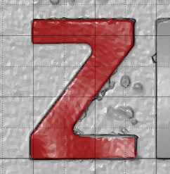
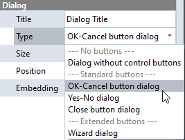
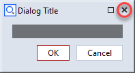
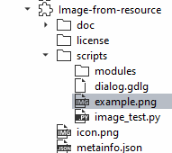
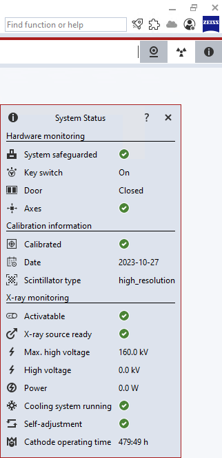

Frequently asked questions
If you did not find an answer here, you might want to check ZEISS Quality Forum - Customizations.
Where are Apps located in the file system?
Apps which are edited are located in C:\Users\<USERID>\AppData\Roaming\GOM\<VERSION>\gom_edited_addons (or %APPDATA%\GOM\<VERSION>\gom_edited_addons, respectively). There is a subfolder for each App named by its UUID.
When editing is finished, an App file (see App file format) is created and saved in C:\Users\<USERID>\AppData\Roaming\GOM\<VERSION>\gom_addons.
How can I update the Apps after changes made outside of ZEISS INSPECT?
After creating, modifying or deleting an App outside of ZEISS INSPECT, you can use gom.script.sys.update_addon_database() to update the internal App database.
How can I stop script execution?
In a user defined dialog, you can call gom.script.sys.close_user_defined_dialog (dialog=\<your_dialog\>).
In general, you can use
import sys
# ...
sys.exit(0)
How do I filter nominal, actual or inspection elements?
Use print (gom.app.project.<element_type>.__doc__) where you replace <element_type> by actual_elements, nominal_elements or inspection as needed to get the available properties.
To show all actual elements by name and type:
for element in gom.app.project.actual_elements:
print (f'{element.name} - type: {element.type}')
You can create a loop in Python to iterate over the elements as shown above and apply a comparison to their attributes, but there is a faster solution!
The filter() method handles this far more efficiently!
Examples for filtering actual elements
group = gom.app.project.actual_elements
f = group.filter("is_selected", True)
print (f) # array of elements matching the filter criterion 'is_selected == True'
f = group.filter("type", "plane")
print (f) # array of elements matching the filter criterion 'type == Plane'
Examples for filtering nominal elements
group = gom.app.project.nominal_elements
f = group.filter("is_visible", True)
print (f) # array of elements matching the filter criterion 'is_visible == True'
f = group.filter("type", "cad")
print (f) # array of elements matching the filter criterion 'type == cad'
Examples for filtering inspection elements
group = gom.app.project.inspection
f = group.filter("is_element_modified_since_import", True)
print (f) # array of elements matching the filter criterion 'is_element_modified_since_import == True'
f = group.filter("type", "cad")
print (f) # array of elements matching the filter criterion 'type == surface_comparison'
How can I access the coordinates of a selection on a mesh?

The token gom.app.project.parts['<part name>'].actual.selection.coordinate provides a gom.Array of the selected vertices. Likewise, gom.app.project.parts['<part name>'].actual.selection.normal gives the corresponding normals and gom.app.project.parts['<part name>'].actual.selection.triangle the triangles defining the mesh.
import gom
import numpy as np
print(gom.app.project.parts['Training Object'].actual.selection.coordinate)
# Output: gom.Array (element=gom.app.project.parts['Training Object'].actual.selection.coordinate, shape=(1, 1343, 3))
print(gom.app.project.parts['Training Object'].actual.selection.normal)
# Output: gom.Array (element=gom.app.project.parts['Training Object'].actual.selection.normal, shape=(1, 1343, 3))
# Typically a numpy-array is used for further processing
selection = np.array(gom.app.project.parts['Training Object'].actual.selection.coordinate)
print(selection.shape)
# Output: (1, 1343, 3)
print(selection)
# Output:
# [[[-2.41255735e+01 2.21117734e+01 -1.91864308e+01]
# [-2.45970797e+01 2.21050666e+01 -1.97100373e+01]
# [-2.81128953e+01 2.20834014e+01 -2.04692317e+01]
# ...
# [-3.93854225e+01 2.09585465e+01 8.64908297e-02]
# [-3.96552365e+01 2.10394088e+01 3.26750288e-03]
# [-4.00649288e+01 2.07525728e+01 7.25684079e-02]]]
This can be used to create a scripted surface element from a selection.
Warning
The triangles returned by gom.app.project.parts['<part name>'].actual.selection.triangle are provided as indices to vertices of the global mesh. The helper function localize_triangles remaps these indices to vertices of the local (selected) mesh.
How do I check if a dialog was closed with ‘Ok’, ‘Yes’/’No’ or ‘Close’, respectively? (And not with ‘Cancel’ or by closing the dialog window.)


Closing a dialog window or pressing the ‘Cancel’ button raises a gom.BreakError exception. To check if any type of dialog was closed via the window close control (see figure) or via the ‘Cancel’ button (in case of the ‘Ok/Cancel’ dialog type), use the following code:
try:
RESULT = gom.script.sys.show_user_defined_dialog (dialog=DIALOG)
except gom.BreakError as e:
print("Dialog window was closed or 'Cancel' button was pressed")
else:
print("'Ok' button was pressed")
How can I retrieve dialog results as a Python dictionary?
print (RESULT.__dict__['__args__'][0])
# example output: {'distance': 2.0, 'label': None}
See User-defined dialogs / Executing dialogs / Dialog results for more details.
How can I use an image from a script resource file in a user defined dialog?
You add your image file as a resource to the App:

You create a dialog file with an Image widget, but without setting the actual image in the dialog editor.
In the Python script, you assign the resource as data to the image widget object:
import gom
DIALOG=gom.script.sys.create_user_defined_dialog (file='dialog.gdlg')
#
# Event handler function called if anything happens inside of the dialog
#
def dialog_event_handler (widget):
pass
DIALOG.handler = dialog_event_handler
DIALOG.image.data = gom.app.resource[":example.png"]
RESULT=gom.script.sys.show_user_defined_dialog (dialog=DIALOG)
How can I get the position of a label and apply it to another label?
You can use gom.script.cad.set_label_position() to set the offset of the new label to the offset of the old label:
label_old = gom.app.project.inspection['Surface comparison 1'].deviation_label['Surface comparison 1.1']
label_new =gom.app.project.inspection['Surface comparison 1'].deviation_label['Surface comparison 1.2']
gom.script.cad.set_label_position(elements = [label_new], offset = label_old.label_offset_in_3d_view)
offset has the type gom.Vec3d.
How can I conditionally set the label (border) color?
In the label properties, you can create a new label template and change the background color to ‘dynamic’. This allows to add an expression in a Python-like syntax, e.g.
if result_dimension < result_dimension.upper_tolerance_limit:
return color('#00ff5e')
else:
return color('#ff0000')
See also ZEISS Quality Tech Guide: Edit Expression (label background color).
How do I check if the sensor warm-up is completed or how long it will take, respectively?
remaining_warmup_time_in_seconds = gom.script.atos.wait_for_sensor_warmup (timeout = my_timeout)
The function blocks until the sensor is ready or the timeout specified with my_timeout occurs.
How can I get the CT scanner’s system status — including cathode operation time?

The command gom.script.ct.get_system_status() provides the same information as the System Status dialog. The actual content depends on the CT scanner model.
Example (ZEISS METROTOM 1):
print(gom.script.ct.get_system_status())
# Example output:
# {'cathode_operation_time': 1727372, 'high_voltage_in_kv': 0.0, 'is_activatable': True,
# 'is_cooling_system_running': True, 'is_key_switch_ok': True, 'is_self_adjustment_running': False,
# 'is_system_safeguarded': True, 'is_xray_source_ready': True, 'max_high_voltage_in_kv': 160.0,
# 'power_in_w': 0.0}
cathode_operation_time is given in seconds.
(Added in SW2023 Service Pack2)
How do I use a C# / .NET library in an App?
First you have to install the Python.NET package in your App.
Here is a simple C# library source code example:
namespace MyDotNetClassLib
{
public class Adder
{
public string className = "Adder";
public static int StaticAdd(int left, int right)
{
return left + right;
}
public int Add(int left, int right)
{
return left + right;
}
}
}
This code has been compiled into the library MyDotNetClassLib.dll.
The following example Python script uses methods and members of this library:
import gom
import clr # .NET Common Language Runtime (provided by Python.NET package)
from System import Console
import sys
sys.path.append('.') # append path to the DLL file
clr.AddReference("MyDotNetClassLib") # name of the assembly (usually the DLL filename without extension .dll)
from MyDotNetClassLib import Adder # import the module (the C# namespace)
print()
print("hello from python")
# execute a C# function
Console.WriteLine("hello from C#")
# call the static method StaticAdd() of class Adder from our MyDotNetClassLib library
print(f"My C# Adder.StaticAdd(1,2): {Adder.StaticAdd(1,2)}")
# create an object of the class Adder...
adder = Adder()
# ... call its Add() method
print(f"My C# adder.Add(3,4): {adder.Add(3,4)}")
# ... read the member variable className
print(f"My C# adder.className: {adder.className}")
# ... write and read back the member variable className
adder.className = "Renamed Adder"
print(f"My C# adder.className: {adder.className}")
This example is based on Stack Overflow: “Calling a C# library from python”.
See Python.NET documentation for more details.